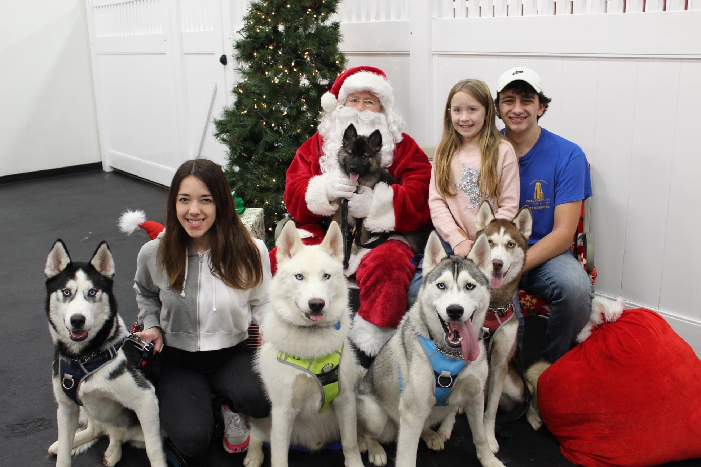
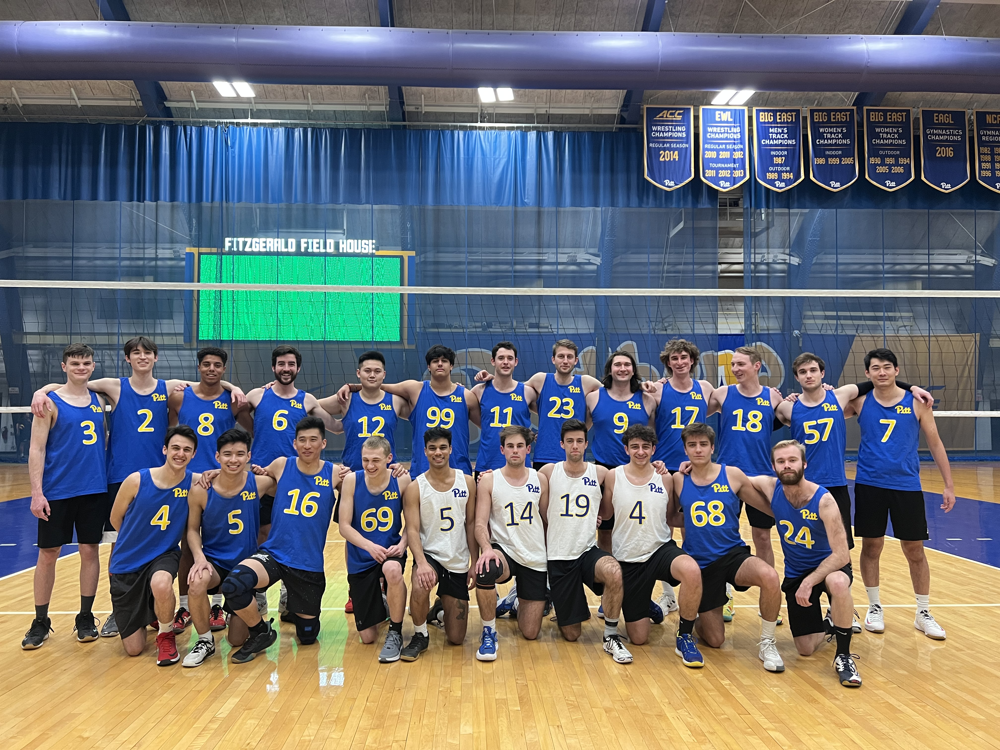

The mysteries of outer space have always caught my attention. From my first Sci-FI exposure through Star Wars at the age of four to actually studying
these mysteries through my research, these mysteries have had such a drastic influence on how I decided to shape my academic career. It struck me during my
junior year of high school that I would be able to study the unknowns of space in an academic setting. However, I applied to the University of Pittsburgh as
a mechanical engineering major in hopes of contributing to the exploration of outer space. I soon realized that I was not drawn to the mechanical design and
implementation aspects of engineering like I felt I should have been to make a meaningful academic career on this path. I made the decision to go back to my
original interests in learning more about what is out there in outer space and changed course into the physics and astronomy program at Pitt.
As I made headway throughout my degree, I decided I wanted to give research a try, as this would allow me to explore the unknown of space at a higher level.
I began working on a project in the fall semester of 2021, working under Prof. Carles Badenes and Ph.D. Candidate Christine Daher analyzing close period
binary core helium burning (red clump) stars and investigating why a binary companion still exists around a red clump host star when the secondary star should
have been engulfed by the red clump star during its evolution through the red giant branch. Shortly after starting on this project, I found myself recruited
to STEPUP as the new data processing lead in order to repair the (still) broken data processing pipeline, SIA (STEPUP Image Analysis).
I am currently not working on either of these projects as I am participating in the Research Experience for Undergraduates (REU) program,
funded by the National Science Foundation (NSF). I am working with Prof. Jamie Tayar investigating various models for an effect known as weakened magnetic braking
in late main sequence and early sub giant stars.
My projects continue on, but I am left with even more doubts about a career regarding research. I recently made the decision to stay at the University of Pittsburgh
for a fifth year and pursue a second degree in computer science. Programming is something that is still relatively new to me as I only started coding in a class
I took during the spring 2020 semester, but it is something that I have enjoyed ever since picking it up. Since starting, I have developed various skills in both Java
and Python and wish to further develop myself as a programmer. I have been starting to practice more on LeetCode to aid my development. I also wish to start
learning HTML and CSS as I am finding an interest in website design.

Koda (black), Morgan (sister), Luka (white), Santa holding Mishka, Anakin (grey), Kaya (red), Bria (sister) and Me!
When I am not working on school work or either of my current research projects, I mostly enjoy spendign my time playing volleyball. I am currently the libero
(number 4) for the Pitt Men's Volleyball Club (PMVBC)'s A-Team. I have been a part of a few intramural teams and also play casually whenever possible on the lawn
of the Cathedral of Learning at Pitt. If I am not playing volleyball, you may find me skiing at Seven Springs during ski season or simply at my computer
speedrunning my favorite video games. I am also trying my best to get into astrophotography, so a lot of my more recent time has been spent researching various
cameras, star trackers and telescopes. I currently have six dogs, five of which are huskies (pictured above) and one black lab (not pictured).

PMVBC Roster 2021-2022
Research
Research Interests
I am currently interested in stellar evolution, with a focus in stellar rotation, and exoplanetary research. I want to become more
involved with writing computational astrophysics code. I hope to be able to explore other fields as well,
such as research involving black holes and gravitational waves.
Current Projects
Research Experience for Undergraduates (REU) at University of Florida
Advisor: Prof. Jamie Tayar
In 2016, Jennifer van Saders provided evidence that current stellar rotation models are predicting a higher rotation period than what has been observed due to a
phenomenon known as weakened magnetic braking. This discovery has implications for a wide variety of astronomical subfields as using stellar rotation periods is one of the most popular methods of probing stellar
ages, and thus interpolating various stellar parameters. The accuracy of gyrochronology method is crucial to confirm that these ages are precise as possible.
I am currently analyzing different models that account for this weakened magnetic braking and will soon come to a decision on the accuracy of existing models.
Using a combination of Kiauhoku interpolation grids and APOGEE DR17 (and possibly Kepler DR25) data, I will perform proper data fitting between observed and theoretical
rotation periods to ensure the accuracy of these models.
Projects on Hold
Red Clump Stars' Unlikely Binary Companions
Advisor: Prof. Carles Badenes
Using the APOGEE Data Release 16, I am investigating properties about core helium (red clump) binary systems. In particular, I am analyzing red clump stars
with a particularly high change in radial velocity, which is an indicator that these stars still contain a short period binary companion.
This is not something expected as the secondary star should have been engulfed by the red clump star during its evolution through the red giant branch, especially
at the shorter periods that we are observing.
APOGEE DR16 red clump binary spectrum
Survey of Transiting Extrasolar Planets at University of Pittsburgh (STEPUP)
Advisor: Prof. Michael Wood-Vasey
STEPUP observes and collects data from stars predicted to have an exoplanet in its orbit. We analyze data by
producing light curves to detect planetary transits. Learn more about STEPUP and what I do here!
Sample light curve produced from STEPUP data for the star HAT-P-3
STEPUP
STEPUP is the Survey of Transiting Extrasolar Planets at the University of Pittsburgh that uses the Allegheny Observatory’s Keeler 16” telescope
to detect extrasolar planets (exoplanets). We take observations (weather permitting) and collect data about stars that we then analyze to determine
if there is actually a planet in the host star's orbit. To do this, we currently perform Instrument Signature Removal (ISR) with our data processing
pipeline, SIA (STEPUP Image Analysis), and perform photometry using an external program known as AstroImageJ. We take the output file from AIJ to
produce light curves for our analysis. Click here to learn more about STEPUP!
I serve as the current Data Processing Lead for STEPUP. Currently, I am working on a curve fitting function that takes the raw data from an AIJ output
file and use Python to fit for the transit depth and transit time, ultimately giving us the ingress and egress times of the transit. I am fitting to
the light curve function provided by Mandel & Agol (2002). I have been able to produce a light curve
from initial guesses for various parameters, the actual curve fitting for parameters, such as the ingress and egress of the transit and the transit depth,
are still a work in progress.
Over the summer, I plan to repair SIA, as we are currently experiencing issues with the Astrometry feature as we are using a CCD that is incompatible with
the World Coordinate System (WCS) Tools that we run our data through. I also plan to redesign the STEPUP website.
Contact
Feel free to email me at jmb442@pitt.edu if you have any questions about my current work!